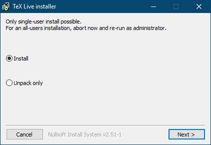
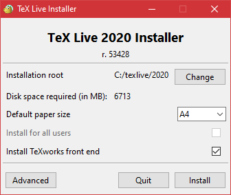
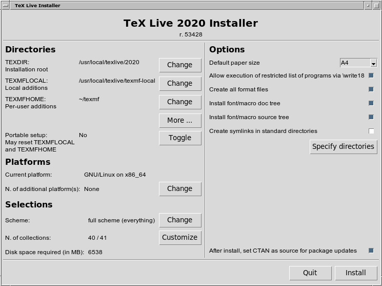
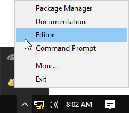
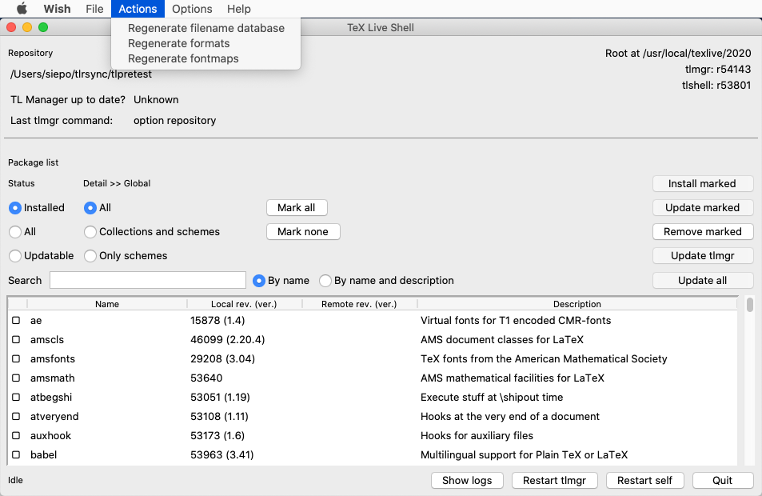
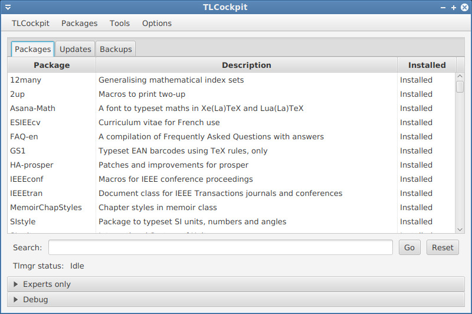
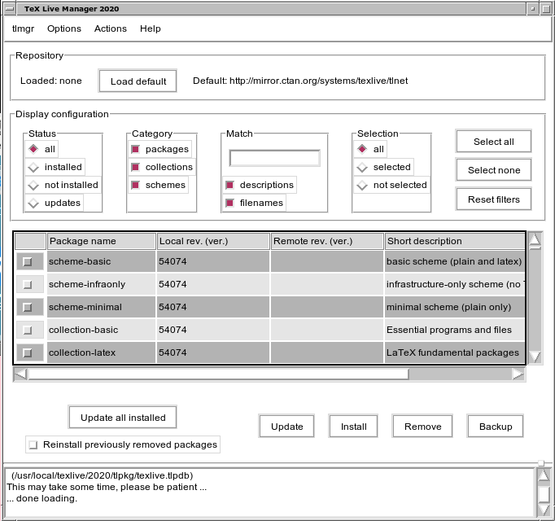

This document describes the main features of the TeX Live software distribution — TeX and related programs for GNU/Linux and other Unix flavors, Mac OS X, and Windows systems.
You may have acquired TeX Live by downloading, or on the TeX Collection DVD, which TeX user groups distribute among their members, or in other ways. Section 2.1 briefly describes the contents of the DVD. Both TeX Live and the TeX Collection are cooperative efforts by the TeX user groups. This document mainly describes TeX Live itself.
TeX Live includes executables for TeX, LaTeX2e, ConTeXt, Metafont, MetaPost, BibTeX and many other programs; an extensive collection of macros, fonts and documentation; and support for typesetting in many different scripts from around the world.
For a brief summary of the major changes in this edition of TeX Live, see the end of the document, section 9 (p. 78).
TeX Live contains binaries for many Unix-based platforms, including GNU/Linux, Mac OS X, and Cygwin. The included sources can be compiled on platforms for which we do not provide binaries.
As to Windows: Windows 7 and later are supported. Windows Vista may still mostly work, but TeX Live will no longer even install on Windows XP or earlier. TeX Live includes no 64-bit executables for Windows, but the 32-bit executables should run on 64-bit systems.
See section 2.1 for alternate solutions for Windows and Mac OS X.
You can install TeX Live either from DVD or over the Internet (https://tug.org/texlive/acquire.html). The net installer itself is small, and downloads everything requested from the Internet.
The DVD installer lets you install to a local disk. You cannot run TeX Live directly from the TeX Collection DVD (or its .iso image), but you can prepare a runnable installation on, e.g., a USB stick (see section 4.2). Installation is described in later sections (p. 12), but here is a quick start:
To the best of our knowledge, the core TeX programs themselves are (and always have been) extremely robust. However, the contributed programs in TeX Live may not reach the same level, despite everyone’s best efforts. As always, you should be careful when running programs on untrusted input; to improve safety, use a new subdirectory or chroot.
This need for care is especially urgent on Windows, since in general Windows finds programs in the current directory before anything else, regardless of the search path. This opens up a wide variety of possible attacks. We have closed many holes, but undoubtedly some remain, especially with third-party programs. Thus, we recommend checking for suspicious files in the current directory, especially executables (binaries or scripts). Ordinarily they should not be present, and definitely should not normally be created by merely processing a document.
Finally, TeX (and its companion programs) are able to write files when processing documents, a feature that can also be abused in a wide variety of ways. Again, processing unknown documents in a new subdirectory is the safest bet.
Another aspect of security is ensuring that downloaded material has not been changed from what was created. The tlmgr program (section 5) will automatically perform cryptographic verification on downloads if the gpg (GNU Privacy Guard) program is available. It is not distributed as part of TeX Live, but see https://texlive.info/tlgpg/ for information about gpg if need be.
The TeX community is active and friendly, and most serious questions end up getting answered. However, the support is informal, done by volunteers and casual users, so it’s especially important that you do your homework before asking. (If you prefer guaranteed commercial support, you can forgo TeX Live completely and purchase a vendor’s system; https://tug.org/interest.html#vendors has a list.)
Here is a list of resources, approximately in the order we recommend using them:
The other side of the coin is helping others who have questions. All the above resources are open to anyone, so feel free to join, start reading, and help out where you can.
This section describes the contents of TeX Live and the TeX Collection of which it is a part.
The TeX Collection DVD comprises the following:
CTAN and protext do not follow the same copying conditions as TeX Live, so be careful when redistributing or modifying.
Here is a brief listing and description of the top level directories in a TeX Live installation.
The TeX system programs, arranged by platform.
Quick overview and useful links for TeX Live, in various languages, in both HTML and plain text.
The source to all included programs, including the main Web2C-based TeX distributions.
The principal tree; see TEXMFDIST below.
Scripts, programs and data for managing the installation, and special support for Windows.
For documentation, the comprehensive links in the top-level file doc.html may be helpful. The documentation for nearly everything (packages, formats, fonts, program manuals, man pages, Info files) is in texmf-dist/doc. You can use the texdoc program to find documentation wherever it is located.
This TeX Live documentation itself is in texmf-dist/doc/texlive, available in several languages:
This section lists the predefined variables specifying the texmf trees used by the system, and their intended purpose, and the default layout of TeX Live. The command tlmgr conf shows the values of these variables, so that you can easily find out how they map to particular directories in your installation.
All of the trees, including the personal ones, should follow the TeX Directory Structure (TDS, https://tug.org/tds), with all its myriad subdirectories, or files may not be found. Section 3.4.6 (p. 42) describes this in more detail. The order here is the reverse order in which the trees are searched, that is, later trees in the list override earlier ones.
The tree which holds nearly all of the files in the original distribution—configuration files, scripts, packages, fonts, etc. (The main exception are the per-platform executables, which are stored in a sibling directory bin/.)
The (site-wide) tree used by texconfig-sys, updmap-sys and fmtutil-sys, and also by tlmgr, to store (cached) runtime data such as format files and generated map files.
The (site-wide) tree used by the utilities texconfig-sys, updmap-sys, and fmtutil-sys to store modified configuration data.
The tree which administrators can use for system-wide installation of additional or updated macros, fonts, etc.
The tree which users can use for their own individual installations of additional or updated macros, fonts, etc. The expansion of this variable dynamically adjusts for each user to their own individual directory.
The (personal) tree used by texconfig, updmap-user and fmtutil-user to store (cached) runtime data such as format files and generated map files.
The (personal) tree used by the utilities texconfig, updmap-sys, and fmtutil-sys to store modified configuration data.
The tree(s) used by ConTeXt MkIV and LuaLaTeX to store (cached) runtime data; defaults to TEXMFSYSVAR, or (if that’s not writable), TEXMFVAR.
The default layout is:
A previous release.
The current release.
GNU/Linux binaries (32-bit)
Mac OS X binaries
GNU/Linux binaries (64-bit)
Windows binaries
TEXMFDIST and TEXMFMAIN
TEXMFSYSVAR, TEXMFCACHE
TEXMFSYSCONFIG
TEXMFLOCAL, intended to be retained from release to release.
Privately generated and configuration data for a previous release.
Privately generated and configuration data for the current release.
TEXMFVAR, TEXMFCACHE
TEXMFCONFIG
TEXMFHOME Personal macros, etc.
Knuth’s original TeX itself is frozen, apart from rare bug fixes. It is present in TeX Live as the program tex, and will remain so for the foreseeable future. TeX Live also contains several extended versions of TeX (also known as TeX engines):
Here are a few other commonly-used programs included in TeX Live:
bibliography support.
index support.
convert DVI to PostScript.
DVI previewer for the X Window System.
cut and paste pages from DVI files.
convert DVI to PDF, an alternative approach to pdfTeX (mentioned above).
PostScript utilities.
PDF utilities.
ConTeXt and PDF processor.
tex4ht: (LA )TeX to HTML (and XML and more) converter.
To begin, get the TeX Collection DVD or download the TeX Live net installer. See https://tug.org/texlive/acquire.html for more information and other methods of getting the software.

The same installer program is run, whatever the source. The most visible difference between the two is that with the net installer, what you end up with is the packages that are currently available. This is in contrast to the DVD and ISO images, which are not updated between the major public releases.
If you need to download through proxies, use a ~/.wgetrc file or environment variables with the proxy settings for Wget (https://www.gnu.org/software/wget/manual/html_node/Proxies.html), or the equivalent for whatever download program you are using. This does not matter if you are installing from the DVD or ISO image.
The following sections explain installer start-up in more detail.
Below, > denotes the shell prompt; user input is bold. The script install-tl is a Perl script. The simplest way to start it on a Unix-compatible system is as follows:
To install in GUI mode (figure 4), you’ll need to have Tcl/Tk installed. Given that, you can run:
The old wizard and perltk/expert options are still available. These require the Perl::Tk module compiled with XFT support, which is generally no problem with GNU/Linux, but often is with other systems. For a complete listing of the various options:
About Unix permissions: Your umask at the time of installation will be respected by the TeX Live installer. Therefore, if you want your installation to be usable by users other than you, make sure your setting is sufficiently permissive, for instance, umask 002. For more information about umask, consult your system documentation.
Special considerations for Cygwin: Unlike other Unix-compatible systems, Cygwin does not by default include all of the prerequisite programs needed by the TeX Live installer. See section 3.1.4.
As mentioned in section 2.1, a separate distribution is prepared for Mac OS X, named MacTeX (https://tug.org/mactex). We recommend using the native MacTeX installer instead of the TeX Live installer on Mac OS X, because the native installer makes a few Mac-specific adjustments, in particular to allow easily switching between the various TeX distributions for Mac OS X (MacTeX, Fink, MacPorts, …) using the so-called TeXDist data structure.
MacTeX is firmly based on TeX Live, and the main TeX trees and binaries are precisely the same. It adds a few extra folders with Mac-specific documentation and applications.
If you are using the unpacked downloaded zip file, or the DVD installer failed to start automatically, double-click install-tl-windows.bat.
You can also start the installer from the command-prompt. Below, > denotes the prompt; user input is bold. If you are in the installer directory, run just:
Or you can invoke it with an absolute location, such as:
To install in text mode, use:
For a complete listing of the various options:


Before beginning the installation, use Cygwin’s setup.exe program to install the perl and wget packages if you have not already done so. The following additional packages are recommended:
Figure 2 displays the main text mode screen under Unix. The text installer is the default on Unix.
This is only a command-line installer; there is no cursor support at all. For instance, you cannot tab around checkboxes or input fields. You just type something (case-sensitive) at the prompt and press the Enter key, and then the entire terminal screen will be rewritten, with adjusted content.
The text installer interface is this primitive in order to make it run on as many platforms as possible, even with a minimal Perl.
The default graphical installer starts out simple, with just a few options; see figure 3. It can be started with
The perltk/expert and wizard modes are still available for systems with have Perl/Tk installed. These can be specified with -gui=perltk and -gui=wizard arguments respectively.
The installer is intended to be mostly self-explanatory, but following are a few notes about the various options and submenus.
Figure 5 displays the text mode binaries menu. By default, only the binaries for your current platform will be installed. From this menu, you can select installation of binaries for other platforms as well. This can be useful if you are sharing a TeX tree across a network of heterogeneous machines, or for a dual-boot system.
Figure 6 displays the TeX Live scheme menu; from here, you choose a “scheme”, which is an overall set of package collections. The default full scheme installs everything available. This is recommended, but you can also choose the basic scheme for just plain and LaTeX, small for a few more programs (equivalent to the so-called BasicTeX installation of MacTeX), minimal for testing purposes, and medium or teTeX to get something in between. There are also various specialized and country-specific schemes.
You can refine your scheme selection with the ‘collections’ menu (figure 7, shown in GUI mode for a change).
Collections are one level more detailed than schemes — in essence, a scheme consists of several collections, a collection consists of one or more packages, and a package (the lowest level grouping in TeX Live) contains the actual TeX macro files, font files, and so on.
If you want more control than the collection menus provide, you can use the TeX Live Manager (tlmgr) program after installation (see section 5); using that, you can control the installation at the package level.
The default layout is described in section 2.3, p. 8. The default installation directory is /usr/local/texlive/2020 on Unix and %SystemDrive%\texlive\2020 on Windows. This arrangement enables having many parallel TeX Live installations, such as one for each release (typically by year, as here), and you can switch between them merely by altering your search path.
That installation directory can be overridden by setting the so-called TEXDIR in the installer. The GUI screen for this and other options is shown in figure 4. The most common reasons to change it are either lacking enough disk space in that partition (the full TeX Live needs several gigabytes), or lacking write permission for the default location (you don’t have to be root or administrator to install TeX Live, but you do need write access to the target directory).
The installation directories can also be changed by setting a variety of environment variables before running the installer (most likely, TEXLIVE_INSTALL_PREFIX or TEXLIVE_INSTALL_TEXDIR); see the documentation from install-tl --help (available online at https://tug.org/texlive/doc/install-tl.html) for the full list and more details.
A reasonable alternative destination is a directory under your home, especially if you will be the sole user. Use ‘~’ to indicate this, as in ‘~/texlive/2020’.
We recommend including the year in the name, to enable keeping different releases of TeX Live side by side. (You may wish to also maintain a version-independent name, such as /usr/local/texlive-cur, via a symbolic link, which you can then repoint after testing the new release.)
Changing TEXDIR in the installer will also change TEXMFLOCAL, TEXMFSYSVAR and TEXMFSYSCONFIG.
TEXMFHOME is the recommended location for personal macro files or packages. The default value is ~/texmf (~/Library/texmf on Macs). In contrast to TEXDIR, here a ~ is preserved in the newly-written configuration files, since it usefully refers to the home directory of the user running TeX. It expands to $HOME on Unix and %USERPROFILE% on Windows. Special redundant note: TEXMFHOME, like all trees, must be organized according to the TDS, or files may not be found.
TEXMFVAR is the location for storing most cached runtime data specific to each user. TEXMFCACHE is the variable name used for that purpose by LuaLaTeXand ConTeXt MkIV (see section 3.4.5, p. 42); its default value is TEXMFSYSVAR, or (if that’s not writable), TEXMFVAR.
Figure 8 shows the text mode options menu. More info on each:
Windows-specific options, as displayed in the advanced Perl/Tk interface:
When all the settings are to your liking, you can type ‘I’ in the text interface, or press the ‘Install TeX Live’ button in the Perl/Tk GUI, to start the installation process. When it is done, skip to section 3.4 to read what else needs to be done, if anything.
Type
Use the GUI installer if possible. This requires Tcl/Tk version 8.5 or higher. This is the case on Mac OS X and is distributed with TeX Live on Windows. The legacy options -gui=perltk and -gui=wizard are still available and require the Perl/Tk module (https://tug.org/texlive/distro.html#perltk) compiled with XFT support; if Tcl/Tk and Perl/Tk are not available, installation continues in text mode.
Force using the text mode installer.
Specify the installer interface language as a standard (usually two-letter) code. The installer tries to automatically determine the right language but if it fails, or if the right language is not available, then it uses English as a fallback. Run install-tl --help to get the list of available languages.
Install for portable use on, e.g., a USB stick. Also selectable from within the text installer with the V command, and from the GUI installer. See section 4.2.
Load the installation profile file and do the installation with no user interaction. The installer always writes a file texlive.profile to the tlpkg subdirectory of your installation. That file can be given as the argument to redo the exact same installation on a different system, for example. Alternatively, you can use a custom profile, most easily created by starting from a generated one and changing values, or an empty file, which will take all the defaults.
Specify package repository from which to install; see following.
(Documented only for completeness: Do not use this unless you know what you are doing.) If you already have an rsync, svn, or other copy of TeX Live (see https://tug.org/texlive/acquire-mirror.html) then this option will use what you’ve got, as-is, and do only the necessary post-install. Be warned that the file tlpkg/texlive.tlpdb may be overwritten; saving it is your responsibility. Also, package removal has to be done manually. This option cannot be toggled via the installer interface.
The default network package repository is a CTAN mirror chosen automatically via http://mirror.ctan.org.
If you want to override that, the location value can be a url starting with ftp:, http:, or file:/, or a plain directory path. (When giving an http: or ftp: location, trailing ‘/’ characters and/or a trailing ‘/tlpkg’ component are ignored.)
For example, you could choose a particular CTAN mirror with something like: http://ctan.example.org/tex-archive/systems/texlive/tlnet/, substituting a real hostname and its particular top-level CTAN path for ctan.example.org/tex-archive. The list of CTAN mirrors is maintained at https://ctan.org/mirrors.
If the given argument is local (either a path or a file:/ url), compressed files in an archive subdirectory of the repository path are used (even if uncompressed files are available as well).
Some post-installation may be required.
If you elected to create symlinks in standard directories (described in section 3.2.4), then there is no need to edit environment variables. Otherwise, on Unix systems, the directory of the binaries for your platform must be added to the search path. (On Windows, the installer takes care of this.)
Each supported platform has its own subdirectory under TEXDIR/bin. See figure 5 for the list of subdirectories and corresponding platforms.
Optionally, you can also add the documentation man and Info directories to their respective search paths, if you want the system tools to find them. The man pages might be found automatically after the addition to PATH.
For Bourne-compatible shells such as bash, and using Intel x86 GNU/Linux and a default directory setup as an example, the file to edit might be $HOME/.profile (or another file sourced by .profile), and the lines to add would look like this:
For csh or tcsh, the file to edit is typically $HOME/.cshrc, and the lines to add might look like:
If you already have settings somewhere in your “dot” files, naturally the TeX Live directories should be merged in as appropriate.
If you want to make these changes globally, or for a user newly added to the system, then you are on your own; there is just too much variation between systems in how and where these things are configured.
Our two hints are: 1) you may want to check for a file /etc/manpath.config and, if present, add lines such as
And 2) check for a file /etc/environment which may define the search path and other default environment variables.
In each (Unix) binary directory, we also create a symbolic link named man to the directory texmf-dist/doc/man. Some man programs, such as the standard Mac OS X man, will automatically find that, obviating the need for any man page setup.
If you installed TeX Live from DVD and then wish to get updates from the Internet, you need to run this command—after you’ve updated your search path (as described in the previous section):
This tells tlmgr to use a nearby CTAN mirror for future updates. This is done by default when installing from DVD, via the option described in section 3.2.4.
If there are problems with the automatic mirror selection, you can specify a particular CTAN mirror from the list at https://ctan.org/mirrors. Use the exact path to the tlnet subdir on that mirror, as shown above.
XeTeX and LuaTeX can use any font installed on the system, not just those in the TeX trees. They do these via related but not identical methods.
On Windows, fonts shipped with TeX Live are automatically made available to XeTeX by font name. On Mac OS X, supporting font name lookups requires additional steps; please see the MacTeX web pages (https://tug.org/mactex). For other Unix systems, the procedure to be able to find the fonts shipped with TeX Live via font name follows.
To facilitate this, when the xetex package is installed (either at initial installation or later), the necessary configuration file is created in TEXMFSYSVAR/fonts/conf/texlive-fontconfig.conf.
To set up the TeX Live fonts for system-wide use (assuming you have suitable privileges), proceed as follows:
If you do not have sufficient privileges to carry out the steps above, or if you want to make the TeX Live fonts available to only one user, you can do the following:
You can run fc-list to see the names of the system fonts. The incantation fc-list : family style file spacing (all arguments are literal strings) shows some generally interesting information.
Both the ‘old’ ConTeXt (Mark II) and the ‘new’ ConTeXt (Mark IV) should run out of the box after TeX Live installation, and should need no special attention as long as you stick to using tlmgr for updates.
However, because ConTeXt MkIV does not use the kpathsea library, some setup will be required whenever you install new files manually (without using tlmgr). After each such installation, each MkIV user must run:
to refresh the ConTeXt disk cache data. The resulting files are stored under TEXMFCACHE, whose default value in TeX Live is TEXMFSYSVAR;TEXMFVAR.
ConTeXt MkIV will read from all paths mentioned in TEXMFCACHE, and write to the first path that is writable. While reading, the last found match will take precedence in the case of duplicated cache data.
For more information, see https://wiki.contextgarden.net/Running_Mark_IV.
This is already mentioned implicitly in section 2.3: TEXMFLOCAL (by default, /usr/local/texlive/texmf-local or %SystemDrive%\texlive\texmf-local on Windows) is intended for system-wide local fonts and macros; and TEXMFHOME (by default, $HOME/texmf or %USERPROFILE%\texmf), is for personal fonts and macros. These directories are intended to stick around from release to release, and have their content seen automatically by a new TeX Live release. Therefore, it is best to refrain from changing the definition of TEXMFLOCAL to be too far away from the main TeX Live directory, or you will need to manually change future releases.
For both trees, files should be placed in their proper TeX Directory Structure (TDS) subdirectories; see https://tug.org/tds or consult texmf-dist/web2c/texmf.cnf. For instance, a LaTeX class file or package should be placed in TEXMFLOCAL/tex/latex or TEXMFHOME/tex/latex, or a subdirectory thereof.
TEXMFLOCAL requires an up-to-date filename database, or files will not be found. You can update it with the command mktexlsr or use the ‘Reinit file database’ button on the configuration tab of the TeX Live Manager GUI.
By default, each of these variables is defined to be a single directory, as shown. This is not a hard-and-fast requirement. If you need to easily switch back and forth between different versions of large packages, for example, you can maintain multiple trees for your own purposes. This is done by setting TEXMFHOME to the list of directories, within braces, separated by commas:
Section 7.1.5 describes brace expansion further.
This is unfortunately a messy topic. Forget about it unless you want to delve into many details of the TeX installation. Many fonts are included in TeX Live already, so take a look if you don’t already know that what you want isn’t there.
A possible alternative is to use XeTeX or LuaTeX (see section 2.4), which let you use operating system fonts without any installation in TeX.
If you do need to do this, see https://tug.org/fonts/fontinstall.html for our best effort at describing the procedure.
After installing TeX Live, you naturally want to test it out, so you can start creating beautiful documents and/ or fonts.
One thing you may immediately be looking for is a front-end with which to edit files. TeX Live installs TeXworks (https://tug.org/texworks) on Windows (only), and MacTeX installs TeXShop (https://pages.uoregon.edu/koch/texshop). On other Unix systems, it’s left up to you to choose an editor. There are many choices available, some of which are listed in the next section; see also https://tug.org/interest.html#editors. Any plain text editor will work; something TeX-specific is not required.
The rest of this section gives some basic procedures for testing that the new system is functional. We give Unix commands here; under Mac OS X and Windows, you’re more likely to run the tests through a graphical interface, but the principles are the same.
A simpler document than sample2e, to reduce the input size if you’re having troubles.
Test if your printer introduces any offsets.
For printing font tables and tests.
Also for font tables, but using plain TeX.
The most canonical (plain) TeX test file of all. You must type ‘\bye’ to the * prompt after ‘tex story.tex’.
If you get an error message saying “Invalid fontname ‘Latin Modern Roman/ICU’…”, then you need to configure your system so that the fonts shipped with TeX Live can be found. See section 3.4.4.
If you are new to TeX, or otherwise need help with actually writing TeX or LaTeX documents, please visit https://tug.org/begin.html for some introductory resources.
Links for some other tools you may consider installing:
For a much longer list of packages and programs, see https://tug.org/interest.html.
The previous sections described the basic installation process. Here we turn to some specialized cases.
TeX Live has been designed to be shared between different systems on a network. With a standard directory layout, no hard paths are configured: the locations for files needed by TeX Live programs are found relative to the programs. You can see this in the principal configuration file $TEXMFDIST/web2c/texmf.cnf, which contains lines such as
This means that adding the directory for TeX Live executables for their platform to their search path is sufficient to get a working setup.
By the same token, you can also install TeX Live locally and then move the entire hierarchy afterwards to a network location.
For Windows, TeX Live includes a launcher tlaunch. Its main window contains menu entries and buttons for various TeX-related programs and documentation, customizable via an ini file. On first use, it replicates the usual Windows-specific post-install, i.e., search path modification and file associations, but only for the current user. Therefore, workstations with access to TeX Live on the local network only need a menu shortcut for the launcher. See the tlaunch manual (texdoc tlaunch, or https://ctan.org/pkg/tlaunch).
The -portable installer option (or V command in the text installer or corresponding GUI option) creates a completely self-contained TeX Live installation under a common root and forgoes system integration. You can create such an installation directly on a USB stick, or copy it to a USB stick afterwards.
To run TeX using this portable installation, you need to add the appropriate binary directory to the search path during your terminal session, as usual.
On Windows, you can double-click tl-tray-menu at the root of the installation and create a temporary ‘tray menu’ offering a choice of a few common tasks, as shown in this screenshot:

The ‘More…’ entry explains how you can customize this menu.



TeX Live includes a program named tlmgr for managing TeX Live after the initial installation. Its capabilities include:
tlmgr’s functionality completely subsumes the texconfig program. We still distribute and maintain texconfig for the sake of anyone used to its interface, but we recommend using tlmgr nowadays.
TeX Live contains several GUI front-ends for tlmgr. Two notable ones: (1) Figure 9 shows tlshell, which is written in Tcl/Tk and runs out of the box under Windows and Mac OS X; (2) Figure 10 shows tlcockpit, which requires Java version 8 or higher and JavaFX. Both are separate packages.
tlmgr also has a native GUI mode (shown in figure 11), which is started with:
After the initial installation, you can update your system to the latest versions available with:
This more complex example adds a collection, for the engine XeTeX, from a local directory:
As you can see, tlmgr installs dependencies, and takes care of any necessary post-install actions, including updating the filename database and (re)generating formats. In the above, we generated new formats for XeTeX.
To describe a package (or collection or scheme):
Last and most important, for full documentation see https://tug.org/texlive/tlmgr.html, or:
Under Windows, the installer does some extra things:
Also, have a look at tlaunch, described in section 4.1, for a different approach.
To be complete, a TeX Live installation needs support packages that are not commonly found on a Windows machine. TeX Live provides the missing pieces. These programs are all installed as part of TeX Live only on Windows.
The Windows counterpart of a Unix home directory is the %USERPROFILE% directory. Under Windows Vista and later it is C:\Users\<username>. In the texmf.cnf file, and Kpathsea in general, ~ will expand appropriately on both Windows and Unix.
Windows stores nearly all configuration data in its registry. The registry contains a set of hierarchically organized keys, with several root keys. The most important ones for installation programs are HKEY_CURRENT_USER and HKEY_LOCAL_MACHINE, HKCU and HKLM in short. The HKCU part of the registry is in the user’s home directory (see section 6.3). HKLM is normally in a subdirectory of the Windows directory.
In some cases, system information could be obtained from environment variables but for other information, for example the location of shortcuts, it is necessary to consult the registry. Setting environment variables permanently also requires registry access.
In later versions of Windows, a distinction is made between regular users and administrators, where only the latter have free access to the entire operating system. We have made an effort to make TeX Live installable without administrative privileges.
If the installer is started with administrative permissions, there is an option to install for all users. If this option is chosen, shortcuts are created for all users, and the system search path is modified. Otherwise, shortcuts and menu entries are created for the current user, and the user search path is modified.
Regardless of administrator status, the default root of TeX Live proposed by the installer is always under %SystemDrive%. The installer always tests whether the root is writable for the current user.
A problem may arise if the user is not an administrator and TeX already exists in the search path. Since the effective search path consists of the system search path followed by the user search path, the new TeX Live would never get precedence. As a safeguard, the installer creates a shortcut to the command-prompt in which the new TeX Live binary directory is prepended to the local search path. The new TeX Live will be always usable from within such a command-prompt. The shortcut for TeXworks, if installed, also prepends TeX Live to the search path, so it should also be immune to this path problem.
You should be aware that even if you are logged in as administrator, you need to explicitly ask for administrator privileges. In fact, there is not much point in logging in as administrator. Instead, right-clicking on the program or shortcut that you want to run usually gives you a choice ‘Run as administrator’.
Windows and Cygwin (see section 3.1.4 for Cygwin installation specifics) users may find that they run out of memory when running some of the programs shipped with TeX Live. For example, asy might run out of memory if you try to allocate an array of 25,000,000 reals, and LuaTeX might run out of memory if you try to process a document with a lot of big fonts.
For Cygwin, you can increase the amount of available memory by following the instructions in the Cygwin User’s Guide (https://cygwin.com/cygwin-ug-net/setup-maxmem.html).
For Windows, you have to create a file, say moremem.reg, with these four lines:
and then execute the command regedit /s moremem.reg as administrator. (If you want to change memory only for the current user instead of system-wide, use HKEY_CURRENT_USER.)
Web2C is an integrated collection of TeX-related programs: TeX itself, Metafont, MetaPost, BibTeX, etc. It is the heart of TeX Live. The home page for Web2C, with the current manual and more, is https://tug.org/web2c.
A bit of history: The original implementation was by Tomas Rokicki who, in 1987, developed a first TeX-to-C system based on change files under Unix, which were primarily the original work of Howard Trickey and Pavel Curtis. Tim Morgan became the maintainer of the system, and during this period the name changed to Web-to-C. In 1990, Karl Berry took over the work, assisted by dozens of additional contributors, and in 1997 he handed the baton to Olaf Weber, who returned it to Karl in 2006.
The Web2C system runs on Unix, 32-bit Windows systems, Mac OS X, and other operating systems. It uses Knuth’s original sources for TeX and other basic programs written in the WEB literate programming system and translates them into C source code. The core TeX programs handled in this way are:
Maintaining bibliographies.
Expands virtual font references in DVI files.
DVI to MPX (MetaPost pictures).
DVI to human-readable text.
Generic font proofsheets.
Generic to packed fonts.
GF to human-readable text.
Creating typeface families.
Prettyprinting Metafont source.
Creating technical diagrams.
Creating hyphenation patterns.
Packed to generic fonts.
PK to human-readable text.
Plain text property list to TFM.
Display WEB pool files.
WEB to Pascal.
Typesetting.
TFM to plain text property list.
Virtual font to virtual property list.
Virtual property list to virtual font.
WEB to TeX.
The precise functions and syntax of these programs are described in the documentation of the individual packages and of Web2C itself. However, knowing a few principles governing the whole family of programs will help you take advantage of your Web2C installation.
All programs honor these standard GNU options:
print basic usage summary.
print version information, then exit.
And most also honor:
print detailed progress report.
For locating files the Web2C programs use the path searching library Kpathsea (https://tug.org/kpathsea). This library uses a combination of environment variables and configuration files to optimize searching the (huge) collection of TeX files. Web2C can look at many directory trees simultaneously, which is useful in maintaining TeX’s standard distribution and local and personal extensions in distinct trees. To speed up file searches, the root of each tree has a file ls-R, containing an entry showing the name and relative pathname for all files under that root.
Let us first describe the generic path searching mechanism of the Kpathsea library.
We call a search path a colon- or semicolon-separated list of path elements, which are basically directory names. A search path can come from (a combination of) many sources. To look up a file ‘my-file’ along a path ‘.:/dir’, Kpathsea checks each element of the path in turn: first ./my-file, then /dir/my-file, returning the first match (or possibly all matches).
In order to adapt optimally to all operating systems’ conventions, on non-Unix systems Kpathsea can use filename separators different from colon (‘:’) and slash (‘/’).
To check a particular path element p, Kpathsea first checks if a prebuilt database (see “Filename database” on page 67) applies to p, i.e., if the database is in a directory that is a prefix of p. If so, the path specification is matched against the contents of the database.
Although the simplest and most common path element is a directory name, Kpathsea supports additional features in search paths: layered default values, environment variable names, config file values, users’ home directories, and recursive subdirectory searching. Thus, we say that Kpathsea expands a path element, meaning it transforms all the specifications into basic directory name or names. This is described in the following sections in the same order as it takes place.
Note that if the filename being searched for is absolute or explicitly relative, i.e., starts with ‘/’ or ‘./’ or ‘../’, Kpathsea simply checks if that file exists.
A search path can come from many sources. In the order in which Kpathsea uses them:
You can see each of these values for a given search path by using the debugging options (see “Debugging actions” on page 71).
Kpathsea reads runtime configuration files named texmf.cnf for search path and other definitions. The search path TEXMFCNF is used to look for these files, but we do not recommend setting this (or any) environment variable to override the system directories.
Instead, normal installation results in a file .../2020/texmf.cnf. If you must make changes to the defaults (not normally necessary), this is the place to put them. The main configuration file is in .../2020/texmf-dist/web2c/texmf.cnf. You should not edit this latter file, as your changes will be lost when the distributed version is updated.
As an aside, if you merely wish to add a personal directory to a particular search path, setting an environment variable is a reasonable method:
To keep the setting maintainable and portable over the years, use a trailing ‘:’ (‘;’ on Windows) to insert the system paths, instead of trying to write them all out explicitly (see section 7.1.4). Another option is to use the TEXMFHOME tree (see section 3.2.3).
All texmf.cnf files in the search path will be read and definitions in earlier files override those in later files. For example, with a search path of .:$TEXMF, values from ./texmf.cnf override those from $TEXMF/texmf.cnf.
A ‘;’ in value is translated to ‘:’ if running under Unix, in order to have a single texmf.cnf that can support both Unix and Windows systems. This translation happens with any value, not just search paths, but fortunately in practice ‘;’ is not needed in other values.
The $var.prog feature is not available on the right-hand side; instead, you must use an additional variable.
A configuration file fragment illustrating most of these points is shown below:
Kpathsea recognizes certain special characters and constructions in search paths, similar to those available in Unix shells. As a general example, the path ~$USER/{foo,bar}//baz, expands to all subdirectories under directories foo and bar in $USER’s home directory that contain a directory or file baz. These expansions are explained in the sections below.
If the highest-priority search path (see “Path sources” on page 62) contains an extra colon (i.e., leading, trailing, or doubled), Kpathsea inserts at that point the next-highest-priority search path that is defined. If that inserted path has an extra colon, the same happens with the next highest. For example, given an environment variable setting
Since it would be useless to insert the default value in more than one place, Kpathsea changes only one extra ‘:’ and leaves any others in place. It checks first for a leading ‘:’, then a trailing ‘:’, then a doubled ‘:’.
A useful feature is brace expansion, which means that, for instance, v{a,b}w expands to vaw:vbw. Nesting is allowed. This is used to implement multiple TeX hierarchies, by assigning a brace list to $TEXMF. In the distributed texmf.cnf, a definition like this (simplified for this example) is made:
We then use this to define, for example, the TeX input path:
which means that, after looking in the current directory, the $TEXMFVAR/tex, $TEXMFHOME/tex, $TEXMFLOCAL/tex and $TEXMFDIST/tex trees will be searched (the last two using ls-R data base files).
Two or more consecutive slashes in a path element following a directory d is replaced by all subdirectories of d: first those subdirectories directly under d, then the subsubdirectories under those, and so on. At each level, the order in which the directories are searched is unspecified.
If you specify any filename components after the ‘//’, only subdirectories with matching components are included. For example, ‘/a//b’ expands into directories /a/1/b, /a/2/b, /a/1/1/b, and so on, but not /a/b/c or /a/1.
Multiple ‘//’ constructs in a path are possible, but ‘//’ at the beginning of a path is ignored.
The following list summarizes the special characters and constructs in Kpathsea configuration files.
Separator in path specification; at the beginning or the end of a path, or doubled in the middle, it substitutes the default path expansion.
Separator on non-Unix systems (acts like :).
Variable expansion.
Represents the user’s home directory.
Brace expansion.
Separates items in brace expansion.
Subdirectory expansion (can occur anywhere in a path, except at its beginning).
Start of comment.
At the end of a line, continuation character to allow multi-line entries.
Search only database to locate file, do not search the disk.
Exactly when a character will be considered special or act as itself depends on the context in which it is used. The rules are inherent in the multiple levels of interpretation of the configuration (parsing, expansion, search, …) and so cannot be concisely stated, unfortunately. There is no general escape mechanism; in particular, ‘\’ is not an “escape character” in texmf.cnf files.
When it comes choosing directory names for installation, it is safest to avoid them all.
Kpathsea goes to some lengths to minimize disk accesses for searches. Nevertheless, in the standard TeX Live, or at any installation with enough directories, searching every possible directory for a given file will take an excessively long time. Therefore, Kpathsea can use an externally-built plain text “database” file named ls-R that maps files to directories, thus avoiding the need to exhaustively search the disk.
A second database file aliases allows you to give additional names to the files listed in ls-R.
As explained above, the name of the main filename database must be ls-R. You can put one at the root of each TeX hierarchy in your installation that you wish to be searched ($TEXMF by default). Kpathsea looks for ls-R files along the TEXMFDBS path.
The recommended way to create and maintain ‘ls-R’ is to run the mktexlsr script included with the distribution. It is invoked by the various ‘mktex’… scripts. In principle, this script just runs the command
If a file is not found in the database, by default Kpathsea goes ahead and searches the disk. If a particular path element begins with ‘!!’, however, only the database will be searched for that element, never the disk.
The kpsewhich program exercises path searching independent of any particular application. This can be useful as a sort of find program to locate files in TeX hierarchies (this is used heavily in the distributed ‘mktex’… scripts).
Kpathsea looks up each non-option argument on the command line as a filename, and returns the first file found. There is no option to return all the files with a particular name (you can run the Unix ‘find’ utility for that).
The most common options are described next.
Set the resolution to num; this only affects ‘gf’ and ‘pk’ lookups. ‘-D’ is a synonym, for compatibility with dvips. Default is 600.
Set the format for lookup to name. By default, the format is guessed from the filename. For
formats which do not have an associated unambiguous suffix, such as MetaPost support files and
dvips configuration files, you have to specify the name as known to Kpathsea, such as tex or enc
files. Run kpsewhich --help-formats for a list.
Set the mode name to string; this only affects ‘gf’ and ‘pk’ lookups. No default: any mode will
be found.
Do everything possible to find the files, notably including searching the disk. By default, only the
ls-R database is checked, in the interest of efficiency.
Search along the path string (colon-separated as usual), instead of guessing the search path from
the filename. ‘//’ and all the usual expansions are supported. The options ‘--path’ and ‘--format’
are mutually exclusive.
Set the program name to name. This can affect the search paths via the .progname feature. The
default is kpsewhich.
shows the path used for file lookups of file type name. Either a filename extension (.pk, .vf, etc.)
or a name can be used, just as with ‘--format’ option.
sets the debugging options to num.
Let us now have a look at Kpathsea in action. Here’s a straightforward search:
By the way, that last is a BibTeX bibliography database for TUGboat articles.
Next we turn our attention to dvips’s header and configuration files. We first look at one of the commonly used files, the general prologue tex.pro for TeX support, before turning our attention to the generic configuration file (config.ps) and the PostScript font map psfonts.map — as of 2004, map and encoding files have their own search paths and new location in texmf trees. As the ‘.ps’ suffix is ambiguous we have to specify explicitly which type we are considering (dvips config) for the file config.ps.
We now take a closer look at the URW Times PostScript support files. The prefix for these in the standard font naming scheme is ‘utm’. The first file we look at is the configuration file, which contains the name of the map file:
It should be evident from these examples how you can easily locate the whereabouts of a given file. This is especially important if you suspect that the wrong version of a file is picked up somehow, since kpsewhich will show you the first file encountered.
Sometimes it is necessary to investigate how a program resolves file references. To make this practical, Kpathsea offers various levels of debugging output:
stat calls (disk lookups). When running with an up-to-date ls-R database this should almost give no output.
References to hash tables (such as ls-R databases, map files, configuration files).
File open and close operations.
General path information for file types searched by Kpathsea. This is useful to find out where a particular path for the file was defined.
Directory list for each path element (only relevant for searches on disk).
File searches.
Variable values.
A value of -1 will set all the above options; in practice, this is usually the most convenient.
Similarly, with the dvips program, by setting a combination of debug switches, one can follow in detail where files are being picked up from. Alternatively, when a file is not found, the debug trace shows in which directories the program looks for the given file, so that one can get an indication what the problem is.
Generally speaking, as most programs call the Kpathsea library internally, one can select a debug option by using the KPATHSEA_DEBUG environment variable, and setting it to (a combination of) values as described in the above list.
(Note for Windows users: it is not easy to redirect all messages to a file in this system. For diagnostic purposes you can temporarily SET KPATHSEA_DEBUG_OUTPUT=err.log).
Let us consider, as an example, a small LaTeX source file, hello-world.tex, which contains the following input.
This little file only uses the font cmr10, so let us look at how dvips prepares the PostScript file (we want to use the Type 1 version of the Computer Modern fonts, hence the option -Pcms).
dvips starts by locating its working files. First, texmf.cnf is found, which gives the definitions of the search paths for the other files, then the file database ls-R (to optimize file searching) and the file aliases, which makes it possible to declare several names (e.g., a short DOS-like 8.3 and a more natural longer version) for the same file. Then dvips goes on to find the generic configuration file config.ps before looking for the customization file .dvipsrc (which, in this case is not found). Finally, dvips locates the config file for the Computer Modern PostScript fonts config.cms (this was initiated with the -Pcms option on the dvips command). This file contains the list of the map files which define the relation between the TeX, PostScript and file system names of the fonts.
At this point dvips identifies itself to the user:
After having found the file in question, dvips outputs the date and time, and informs us that it will generate the file hello-world.ps, then that it needs the font file cmr10, and that the latter is declared as “resident” (no bitmaps needed):
Another useful feature of Web2C is its possibility to control a number of memory parameters (in particular, array sizes) via the runtime file texmf.cnf read by Kpathsea. The memory settings can be found in Part 3 of that file in the TeX Live distribution. The more important are:
Total words of memory available, for TeX, Metafont and MetaPost. You must make a new format file for each different setting. For instance, you could generate a “huge” version of TeX, and call the format file hugetex.fmt. Using the standard way of specifying the program name used by Kpathsea, the particular value of the main_memory variable will then be read from texmf.cnf.
Extra space for “large” TeX data structures: boxes, glue, breakpoints, etc. Especially useful if you use PI CTeX.
Number of words for font information available for TeX. This is more or less the total size of all TFM files read.
Additional space for the hash table of control sequence names. Only ≈10,000 control sequences can be stored in the main hash table; if you have a large book with numerous cross-references, this might not be enough. The default value of hash_extra is 50000.
This facility is no substitute for truly dynamic arrays and memory allocation, but since these are extremely difficult to implement in the present TeX source, these runtime parameters provide a practical compromise allowing some flexibility.
In various places above, we gave various search paths starting with . (to search the current directory first), as in
This is a simplification. The texmf.cnf file we distribute in TeX Live uses $TEXMFDOTDIR instead of just ‘.’, as in:
The reason to use the variable $TEXMFDOTDIR in the path definitions instead of simply ‘.’ is purely so that it can be overridden. For example, a complex document may have many source files arranged in many subdirectories. To handle that, you can set TEXMFDOTDIR to .// (for example, in the environment when you build the document) and they will all get searched. (Warning: don’t use .// by default; it’s usually highly undesirable, and potentially insecure, to search through all subdirectories for an arbitrary document.)
As another example, you may wish not to search the current directory at all, e.g., if you have arranged for all the files to be found via explicit paths. You can set $TEXMFDOTDIR to, say, /nonesuch or any other nonexistent directory for this.
The default value of $TEXMFDOTDIR is just ‘.’, as set in our texmf.cnf.
TeX Live is a joint effort by virtually all of the TeX user groups. This edition of TeX Live was overseen by Karl Berry. The other principal contributors, past and present, are listed below.
Builders of the binaries: Marc Baudoin (amd64-netbsd, i386-netbsd), Ken Brown (i386-cygwin, x86_64-cygwin), Simon Dales (armhf-linux), Johannes Hielscher (aarch64-linux), Akira Kakuto (win32), Dick Koch (x86_64-darwin), Nikola Lečić (amd64-freebsd, i386-freebsd), Henri Menke (x86_64-linuxmusl), Mojca Miklavec (i386-linux, x86_64-darwinlegacy, i386-solaris, x86_64-solaris, sparc-solaris), Norbert Preining (x86_64-linux). For information on the TeX Live build process, see https://tug.org/texlive/build.html.
Translators of this manual: Denis Bitouzé & Patrick Bideault (French), Carlos Enriquez Figueras (Spanish), Jjgod Jiang, Jinsong Zhao, Yue Wang, & Helin Gai (Chinese), Nikola Lečić (Serbian), Marco Pallante & Carla Maggi (Italian), Petr Sojka & Jan Busa (Czech/Slovak), Boris Veytsman (Russian), Zofia Walczak (Polish), Uwe Ziegenhagen (German). The TeX Live documentation web page is https://tug.org/texlive/doc.html.
Of course the most important acknowledgement must go to Donald Knuth, first for inventing TeX, and then for giving it to the world.
Discussion began in late 1993 when the Dutch TeX Users Group was starting work on its 4AllTeX CD for MS-DOS users, and it was hoped at that time to issue a single, rational, CD for all systems. This was too ambitious a target for the time, but it did spawn not only the very successful 4AllTeX CD, but also the TUG Technical Council working group on a TeX Directory Structure (https://tug.org/tds), which specified how to create consistent and manageable collections of TeX support files. A complete draft of the TDS was published in the December 1995 issue of TUGboat, and it was clear from an early stage that one desirable product would be a model structure on CD. The distribution you now have is a very direct result of the working group’s deliberations. It was also clear that the success of the 4AllTeX CD showed that Unix users would benefit from a similarly easy system, and this is the other main strand of TeX Live.
We first undertook to make a new Unix-based TDS CD in the autumn of 1995, and quickly identified Thomas Esser’s teTeX as the ideal setup, as it already had multi-platform support and was built with portability across file systems in mind. Thomas agreed to help, and work began seriously at the start of 1996. The first edition was released in May 1996. At the start of 1997, Karl Berry completed a major new release of Web2c, which included nearly all the features which Thomas Esser had added in teTeX, and we decided to base the 2nd edition of the CD on the standard Web2C, with the addition of teTeX’s texconfig script. The 3rd edition of the CD was based on a major revision of Web2C, 7.2, by Olaf Weber; at the same time, a new revision of teTeX was being made, and TeX Live included almost all of its features. The 4th edition followed the same pattern, using a new version of teTeX, and a new release of Web2C (7.3). The system now included a complete Windows setup, thanks to Fabrice Popineau.
For the 5th edition (March 2000) many parts of the CD were revised and checked, updating hundreds of packages. Package details were stored in XML files. But the major change for TeX Live 5 was that all non-free software was removed. Everything in TeX Live is now intended to be compatible with the Debian Free Software Guidelines (https://debian.org/intro/free); we have done our best to check the license conditions of all packages, but we would very much appreciate hearing of any mistakes.
The 6th edition (July 2001) had much more material updated. The major change was a new install concept: the user could select a more exact set of needed collections. Language-related collections were completely reorganized, so selecting any of them installs not only macros, fonts, etc., but also prepares an appropriate language.dat.
The 7th edition of 2002 had the notable addition of Mac OS X support, and the usual myriad of updates to all sorts of packages and programs. An important goal was integration of the source back with teTeX, to correct the drift apart in versions 5 and 6.
In 2003, with the continuing flood of updates and additions, we found that TeX Live had grown so large it could no longer be contained on a single CD, so we split it into three different distributions (see section 2.1, p. 7). In addition:
2004 saw many changes:
.map files are now searched for in subdirectories of fonts/map only (in each texmf tree), along the TEXFONTMAPS path. Similarly, .enc files are now searched for in subdirectories of fonts/enc only, along the ENCFONTS path. updmap will attempt to warn about problematic files.
For methods of handling this and other information, please see https://tug.org/texlive/mapenc.html.
It also means it’s more important than ever to use the ifpdf package (works with both plain and LaTeX) or equivalent code, because simply testing whether \pdfoutput or some other primitive is defined is not a reliable way to determine if PDF output is being generated. We made this backward compatible as best we could this year, but next year, \pdfoutput may be defined even when DVI is being written.
See the Web2C manual for more: texmf-dist/doc/web2c.
2005 saw the usual huge number of updates to packages and programs. The infrastructure stayed relatively stable from 2004, but inevitably there were some changes there as well:
In 2006–2007, the major new addition to TeX Live was the XeTeX program, available as the xetex and xelatex programs; see https://scripts.sil.org/xetex.
MetaPost also received a notable update, with more planned for the future (https://tug.org/metapost/articles), likewise pdfTeX (https://tug.org/applications/pdftex).
The TeX .fmt (high-speed format) and the similar files for MetaPost and Metafont are now stored in subdirectories of texmf/web2c, instead of in the directory itself (although the directory is still searched, for the sake of existing .fmt’s). The subdirectories are named for the ‘engine’ in use, such as tex or pdftex or xetex. This change should be invisible in normal use.
The (plain) tex program no longer reads %& first lines to determine what format to run; it is the pure Knuthian TeX. (LaTeX and everything else do still read %& lines).
Of course the year also saw (the usual) hundreds of other updates to packages and programs. As usual, please check CTAN (https://ctan.org) for updates.
Internally, the source tree is now stored in Subversion, with a standard web interface for viewing the tree, as linked from our home page. Although not visible in the final distribution, we expect this will provide a stable development foundation for future years.
Finally, in May 2006 Thomas Esser announced that he would no longer be updating teTeX (https://tug.org/tetex). As a result, there was a surge of interest in TeX Live, especially among GNU/Linux distributors. (There is a new tetex installation scheme in TeX Live, which provides an approximate equivalent.) We hope this will eventually translate to improvements in the TeX environment for everyone.
In 2008, the entire TeX Live infrastructure was redesigned and reimplemented. Complete information about an installation is now stored in a plain text file tlpkg/texlive.tlpdb.
Among other things, this finally makes possible upgrading a TeX Live installation over the Internet after the initial installation, a feature MiKTeX has provided for many years. We expect to regularly update new packages as they are released to CTAN.
The major new engine LuaTeX (http://luatex.org) is included; besides a new level of flexibility in typesetting, this provides an excellent scripting language for use both inside and outside of TeX documents.
Support among Windows and the Unix-based platforms is now much more uniform. In particular, most Perl and Lua scripts are now available on Windows, using the Perl internally distributed with TeX Live.
The new tlmgr script (section 5) is the general interface for managing TeX Live after the initial installation. It handles package updates and consequent regeneration of formats, map files, and language files, optionally including local additions.
With the advent of tlmgr, the texconfig actions to edit the format and hyphenation configuration files are now disabled.
The xindy indexing program (http://xindy.sourceforge.net/) is now included on most platforms.
The kpsewhich tool can now report all matches for a given file (option –all) and limit matches to a given subdirectory (option –subdir).
The dvipdfmx program now includes functionality to extract bounding box information, via the command name extractbb; this was one of the last features provided by dvipdfm not in dvipdfmx.
The font aliases Times-Roman, Helvetica, and so on have been removed. Different packages expected them to behave differently (in particular, to have different encodings), and there was no good way to resolve this.
The platex format has been removed, to resolve a name conflict with a completely different Japanese platex; the polski package is now the main Polish support.
Internally, the WEB string pool files are now compiled into the binaries, to ease upgrades.
Finally, the changes made by Donald Knuth in his ‘TeX tuneup of 2008’ are included in this release. See https://tug.org/TUGboat/Articles/tb29-2/tb92knut.pdf.
In 2009, the default output format for Lua(LA )TeX is now PDF, to take advantage of LuaTeX’s OpenType support, et al. New executables named dviluatex and dvilualatex run LuaTeX with DVI output. The LuaTeX home page is http://luatex.org.
The original Omega engine and Lambda format have been excised, after discussions with the Omega authors. The updated Aleph and Lamed remain, as do the Omega utilities.
A new release of the AMS Type 1 fonts is included, including Computer Modern: a few shape changes made over the years by Knuth in the Metafont sources have been integrated, and the hinting has been updated. The Euler fonts have been thoroughly reshaped by Hermann Zapf (see https://tug.org/TUGboat/Articles/tb29-2/tb92hagen-euler.pdf). In all cases, the metrics remain unchanged. The AMS fonts home page is https://ams.org/tex/amsfonts.html.
The new GUI front end TeXworks is included for Windows, and also in MacTeX. For other platforms, and more information, see the TeXworks home page, https://tug.org/texworks. It is a cross-platform front-end inspired by the Mac OS X TeXShop editor, aiming at ease-of-use.
The graphics program Asymptote is included for several platforms. This implements a text-based graphics description language vaguely akin to MetaPost, but with advanced 3D support and other features. Its home page is https://asymptote.sourceforge.io.
The separate dvipdfm program has been replaced by dvipdfmx, which operates in a special compatibility mode under that name. dvipdfmx includes CJK support and has accumulated many other fixes over the years since the last dvipdfm release.
Executables for the cygwin and i386-netbsd platforms are now included, while we were advised that OpenBSD users get TeX through their package systems, plus there were difficulties in making binaries that have a chance of working on more than one version.
A miscellany of smaller changes: we now use xz compression, the stable replacement for lzma (https://tukaani.org/xz/); a literal $ is allowed in filenames when it does not introduce a known variable name; the Kpathsea library is now multi-threaded (made use of in MetaPost); the entire TeX Live build is now based on Automake.
Final note on the past: all releases of TeX Live, along with ancillary material such as CD labels, are available at ftp://tug.org/historic/systems/texlive.
In 2010, the default version for PDF output is now 1.5, enabling more compression. This applies to all the TeX engines when used to produce PDF and to dvipdfmx. Loading the pdf14 LaTeX package changes back to PDF 1.4, or set \pdfminorversion=4.
pdf(LA )TeX now automatically converts a requested Encapsulated PostScript (EPS) file to PDF, via the epstopdf package, when and if the LaTeX graphics.cfg configuration file is loaded, and PDF is being output. The default options are intended to eliminate any chance of hand-created PDF files being overwritten, but you can also prevent epstopdf from being loaded at all by putting \newcommand{\DoNotLoadEpstopdf}{} (or \def...) before the \documentclass declaration. It is also not loaded if the pst-pdf package is used. For more details, see the epstopdf package documentation (https://ctan.org/pkg/epstopdf-pkg).
A related change is that execution of a very few external commands from TeX, via the \write18 feature, is now enabled by default. These commands are repstopdf, makeindex, kpsewhich, bibtex, and bibtex8; the list is defined in texmf.cnf. Environments which must disallow all such external commands can deselect this option in the installer (see section 3.2.4), or override the value after installation by running tlmgr conf texmf shell_escape 0.
Yet another related change is that BibTeX and Makeindex now refuse to write their output files to an arbitrary directory (like TeX itself), by default. This is so they can now be enabled for use by the restricted \write18. To change this, the TEXMFOUTPUT environment variable can be set, or the openout_any setting changed.
XeTeX now supports margin kerning along the same lines as pdfTeX. (Font expansion is not presently supported.)
By default, tlmgr now saves one backup of each package updated (tlmgr option autobackup 1), so broken package updates can be easily reverted with tlmgr restore. If you do post-install updates, and don’t have the disk space for the backups, run tlmgr option autobackup 0.
New programs included: the pTeX engine and related utilities for typesetting Japanese; the BibTeXU program for Unicode-enabled BibTeX; the chktex utility (originally from http://baruch.ev-en.org/proj/chktex) for checking (LA )TeX documents; the dvisvgm (https://dvisvgm.de) DVI-to-SVG translator.
Executables for these new platforms are now included: amd64-freebsd, amd64-kfreebsd, i386-freebsd, i386-kfreebsd, x86_64-darwin, x86_64-solaris.
A change in TeX Live 2009 that we failed to note: numerous TeX4ht-related executables (https://tug.org/tex4ht) were removed from the binary directories. The generic mk4ht program can be used to run any of the various tex4ht combinations.
Finally, the TeX Live release on the TeX Collection DVD can no longer be run live (oddly enough). A single DVD no longer has enough room. One beneficial side effect is that installation from the physical DVD is much faster.
The Mac OS X binaries (universal-darwin and x86_64-darwin) now work only on Leopard or later; Panther and Tiger are no longer supported.
The biber program for bibliography processing is included on common platforms. Its development is closely coupled with the biblatex package, which completely reimplements the bibliographical facilities provided by LaTeX.
The MetaPost (mpost) program no longer creates or uses .mem files. The needed files, such as plain.mp, are simply read on every run. This is related to supporting MetaPost as a library, which is another significant though not user-visible change.
The updmap implementation in Perl, previously used only on Windows, has been revamped and is now used on all platforms. There shouldn’t be any user-visible changes as a result, except that it runs much faster.
The initex and inimf programs were restored (but no other ini* variants).
tlmgr supports updates from multiple network repositories. The section on multiple repositories in the tlmgr help output has more.
The parameter \XeTeXdashbreakstate is set to 1 by default, for both xetex and xelatex. This allows line breaks after em-dashes and en-dashes, which has always been the behavior of plain TeX, LaTeX, LuaTeX, etc. Existing XeTeX documents which must retain perfect line-break compatibility will need to set \XeTeXdashbreakstate to 0 explicitly.
The output files generated by pdftex and dvips, among others, can now exceed 2 gigabytes.
The 35 standard PostScript fonts are included in the output of dvips by default, since so many different versions of them are extant.
In the restricted \write18 execution mode, set by default, mpost is now an allowed program.
A texmf.cnf file is also found in ../texmf-local, e.g., /usr/local/texlive/texmf-local/web2c/texmf.cnf, if it exists.
The updmap script reads a per-tree updmap.cfg instead of one global config. This change should be invisible, unless you edited your updmap.cfg’s directly. The updmap --help output has more.
Platforms: armel-linux and mipsel-linux added; sparc-linux and i386-netbsd are no longer in the main distribution.
Distribution layout: the top-level texmf/ directory has been merged into texmf-dist/, for simplicity. Both the TEXMFMAIN and TEXMFDIST Kpathsea variables now point to texmf-dist.
Many small language collections have been merged together, to simplify installation.
MetaPost: native support for PNG output and floating-point (IEEE double) has been added.
LuaTeX: updated to Lua 5.2, and includes a new library (pdfscanner) to process external PDF page content, among much else (see its web pages).
XeTeX (also see its web pages for more):
xdvi: now uses FreeType instead of t1lib for rendering.
microtype.sty: some support for XeTeX (protrusion) and LuaTeX (protrusion, font expansion, tracking), among other enhancements.
tlmgr: new pinning action to ease configuring multiple repositories; that section in tlmgr --help has more, online at https://tug.org/texlive/doc/tlmgr.html#MULTIPLE-REPOSITORIES.
Platforms: armhf-linux, mips-irix, i386-netbsd, and amd64-netbsd added or revived; powerpc-aix removed.
2014 saw another TeX tune-up from Knuth; this affected all engines, but the only visible change likely is the restoration of the preloaded format string on the banner line. Per Knuth, this now reflects the format that would be loaded by default, rather than an undumped format that is actually preloaded in the binary; it may be overridden in various ways.
pdfTeX: new warning-suppression parameter \pdfsuppresswarningpagegroup; new primitives for fake interword spaces to help with PDF text reflowing: \pdfinterwordspaceon, \pdfinterwordspaceoff, \pdffakespace.
LuaTeX: Notable changes and fixes were made to font loading and hyphenation. The biggest addition is a new engine variant, luajittex and its siblings texluajit and texluajitc. This uses a just-in-time Lua compiler (detailed TUGboat article at https://tug.org/TUGboat/tb34-1/tb106scarso.pdf). luajittex is still in development, is not available on all platforms, and is considerably less stable than luatex. Neither we nor its developers recommend using it except for the specific purpose of experimenting with jit on Lua code.
XeTeX: The same image formats are now supported on all platforms (including Mac); avoid Unicode compatibility decomposition fallback (but not other variants); prefer OpenType to Graphite fonts, for compatibility with previous XeTeX versions.
MetaPost: A new numbersystem decimal is supported, along with a companion internal numberprecision; a new definition of drawdot in plain.mp, per Knuth; bug fixes in SVG and PNG output, among others.
The pstopdf ConTeXt utility will be removed as a standalone command at some point after the release, due to conflicts with OS utilities of the same name. It can still (and now) be invoked as mtxrun –script pstopdf.
psutils has been substantially revised by a new maintainer. As a result, several seldom-used utilities (fix*, getafm, psmerge, showchar) are now only in the scripts/ directory rather than being user-level executables (this can be reversed if it turns out to be problematic). A new script, psjoin, has been added.
The MacTeX redistribution of TeX Live (section 3.1.2) no longer includes the optional Mac-only packages for the Latin Modern and TeX Gyre fonts, since it is easy enough for individual users to make them available to the system. The convert program from ImageMagick has also been excised, since TeX4ht (specifically tex4ht.env) now uses Ghostscript directly.
The langcjk collection for Chinese, Japanese, and Korean support has been split into individual language collections for the sake of more moderate sizes.
Platforms: x86_64-cygwin added, mips-irix removed; Microsoft no longer supports Windows XP, so our programs may start failing there at any time.
LaTeX2e now incorporates, by default, changes previously included only by explicitly loading the fixltx2e package, which is now a no-op. A new latexrelease package and other mechanisms allow for controlling what is done. The included LaTeX News #22 and “LaTeX changes” documents have details. Incidentally, the babel and psnfss packages, while core parts of LaTeX, are maintained separately and are not affected by these changes (and should still work).
Internally, LaTeX2e now includes Unicode-related engine configuration (what characters are letters, naming of primitives, etc.) which was previously part of TeX Live. This change is intended to be invisible to users; a few low-level internal control sequences have been renamed or removed, but the behavior should be just the same.
pdfTeX: Support JPEG Exif as well as JFIF; do not emit a warning if \pdfinclusionerrorlevel is negative; sync with xpdf 3.04.
LuaTeX: New library newtokenlib for scanning tokens; bug fixes in the normal random number generator and other places.
XeTeX: Image handling fixes; xdvipdfmx binary looked for first as a sibling to xetex; internal XDV opcodes changed.
MetaPost: New numbersystem binary; new Japanese-enabled upmpost and updvitomp programs, analogous to up*tex.
MacTeX: Updates to the included Ghostscript package for CJK support. The TeX Distribution Preference Pane now works in Yosemite (Mac OS X 10.10). Resource-fork font suitcases (generally without an extension) are no longer supported by XeTeX; data-fork suitcases (.dfont) remain supported.
Infrastructure: The fmtutil script has been reimplemented to read fmtutil.cnf on a per-tree basis, analogous to updmap. Web2C mktex* scripts (including mktexlsr, mktextfm, mktexpk) now prefer programs in their own directory, instead of always using the existing PATH.
Platforms: *-kfreebsd removed, since TeX Live is now easily available through the system platform mechanisms. Support for some additional platforms is available as custom binaries (https://tug.org/texlive/custom-bin.html). In addition, some platforms are now omitted from the DVD (simply to save space), but can be installed normally over the net.
LuaTeX: Sweeping changes to primitives, both renames and removals, along with some node structure rearrangements. The changes are summarized in an article by Hans Hagen, “LuaTeX 0.90 backend changes for PDF and more” (https://tug.org/TUGboat/tb37-1/tb115hagen-pdf.pdf); for all the details, see the LuaTeX manual, texmf-dist/doc/luatex/base/luatex.pdf.
Metafont: New highly experimental sibling programs MFlua and MFluajit, integrating Lua with Metafont, for trial testing purposes.
MetaPost: Bug fixes and internal preparations for MetaPost 2.0.
SOURCE_DATE_EPOCH support in all engines except LuaTeX (which will come in the next release) and original tex (intentionally omitted): if the environment variable SOURCE_DATE_EPOCH is set, its value is used for timestamps in the PDF output. If SOURCE_DATE_EPOCH_TEX_PRIMITIVES is also set, the SOURCE_DATE_EPOCH value is used to initialize the TeX primitives \year, \month, \day, \time. The pdfTeX manual has examples and details.
pdfTeX: new primitives \pdfinfoomitdate, \pdftrailerid, \pdfsuppressptexinfo, to control values appearing in the output which normally change with each run. These features are for PDF output only, not DVI.
XeTeX: New primitives \XeTeXhyphenatablelength, \XeTeXgenerateactualtext,
\XeTeXinterwordspaceshaping, \mdfivesum; character class limit increased to 4096; DVI id byte
incremented.
Other utilities:
MacTeX: The TeX Distribution Preference Pane is gone; its functionality is now in TeX Live Utility; bundled GUI applications upgraded; new script cjk-gs-integrate to be run by users who wish to incorporate various CJK fonts into Ghostscript.
Infrastructure: System-level tlmgr configuration file supported; verify package checksums; if GPG is available, verify signature of network updates. These checks happen with both the installer and tlmgr. If GPG is not available, updates proceed as usual.
Platforms: alpha-linux and mipsel-linux removed.
LuaTeX: More callbacks, more typesetting control, more access to internals; ffi library for dynamic code loading added on some platforms.
pdfTeX: Environment variable SOURCE_DATE_EPOCH_TEX_PRIMITIVES from last year renamed to FORCE_SOURCE_DATE, with no changes in functionality; if the \pdfpageattr token list contains the string /MediaBox, omit output of the default /MediaBox.
XeTeX: Unicode/OpenType math now based on HarfBuzz’s MATH table support; some bug fixes.
Dvips: Make the last papersize special win, for consistency with dvipdfmx and package expectations; the -L0 option (L0 config setting) restores the previous behavior of the first special winning.
epTeX, eupTeX: New primitives \pdfuniformdeviate, \pdfnormaldeviate, \pdfrandomseed, \pdfsetrandomseed, \pdfelapsedtime, \pdfresettimer, from pdfTeX.
MacTeX: As of this year, only Mac OS X releases for which Apple still releases security patches will be supported in MacTeX, under the platform name x86_64-darwin; currently this means Yosemite, El Capitan, and Sierra (10.10 and newer). Binaries for older Mac OS X versions are not included in MacTeX, but are still available in TeX Live (x86_64-darwinlegacy, i386-darwin, powerpc-darwin).
Infrastructure: The TEXMFLOCAL tree is now searched before TEXMFSYSCONFIG and TEXMFSYSVAR (by default); the hope is that this will better match expectations of local files overriding system files. Also, tlmgr has a new mode shell for interactive and scripted use, and a new action conf auxtrees to easily add and remove extra trees.
updmap and fmtutil: These scripts now give a warning when invoked without explicitly specifying either so-called system mode (updmap-sys, fmtutil-sys, or option -sys), or user mode (updmap-user, fmtutil-user, or option -user). The hope is that this will reduce the perennial problem of invoking user mode by accident and thus losing future system updates. See https://tug.org/texlive/scripts-sys-user.html for details.
install-tl: Personal paths such as TEXMFHOME are now set to MacTeX values (~/Library/...) by default on Macs. New option -init-from-profile to start an installation with the values from a given profile; new command P to explicitly save a profile; new profile variable names (but previous ones are still accepted).
SyncTeX: the name of the temporary file now looks like foo.synctex(busy), instead of foo.synctex.gz(busy) (no .gz). Front-ends and build systems that want to remove temp files may need adjusting.
Other utilities: texosquery-jre8 is a new cross-platform program for retrieving locale and other OS information from a TeX document; it is included in shell_escape_commands by default for restricted shell execution. (Older JRE versions are supported by texosquery, but cannot be enabled in restricted mode, as they are no longer supported by Oracle, even for security issues.)
Platforms: See MacTeX entry above; no other changes.
Kpathsea: Case-insensitive filename matching now done by default in non-system directories; set texmf.cnf or environment variable texmf_casefold_search to 0 to disable. Full details in the Kpathsea manual (https://tug.org/kpathsea).
epTeX, eupTeX: New primitive \epTeXversion.
LuaTeX: Preparation for moving to Lua 5.3 in 2019: a binary luatex53 is available on most platforms, but must be renamed to luatex to be effective. Or use the ConTeXt Garden (https://wiki.contextgarden.net) files; more information there.
MetaPost: Fixes for wrong path directions, TFM and PNG output.
pdfTeX: Allow encoding vectors for bitmap fonts; current directory not hashed into PDF ID; bug fixes for \pdfprimitive and related.
XeTeX: Support /Rotate in PDF image inclusion; exit nonzero if the output driver fails; various obscure UTF-8 and other primitive fixes.
MacTeX: See version support changes below. In addition, the files installed in /Applications/TeX/ by MacTeX have been reorganized for greater clarity; now this location contains four GUI programs (BibDesk, LaTeXiT, TeX Live Utility, and TeXShop) at the top level and folders with additional utilities and documentation.
tlmgr: new front-ends tlshell (Tcl/Tk) and tlcockpit (Java); JSON output; uninstall now a synonym for remove; new action/option print-platform-info.
Platforms:
Kpathsea: More consistent brace expansion and path splitting; new variable TEXMFDOTDIR instead of hard-coded . in paths allows for easily searching additional or sub-directories (see comments in texmf.cnf).
epTeX, eupTeX: New primitives \readpapersizespecial and \expanded.
LuaTeX: Lua 5.3 now used, with concomitant arithmetic and interface changes. The homegrown library pplib is used to read pdf files, thus eliminating the dependency on poppler (and the need for C++); Lua interface changed accordingly.
MetaPost: r-mpost command name recognized as an alias for invocation with the –restricted option, and added to the list of restricted commands available by default. Minimum precision now 2 for decimal and binary mode. Binary mode no longer available in MPlib but still available in standalone MetaPost.
pdfTeX: New primitive \expanded; if new primitive parameter \pdfomitcharset is set to 1, the /CharSet string omitted from the PDF output, since it cannot feasibly be guaranteed correct, as required by PDF/A-2 and PDF/A-3.
XeTeX: New primitives \expanded, \creationdate, \elapsedtime, \filedump, \filemoddate, \filesize, \resettimer, \normaldeviate, \uniformdeviate, \randomseed; extend \Ucharcat to produce active characters.
tlmgr: Support curl as a download program; use lz4 and gzip before xz for local backups, if available; prefer system-provided binaries over binaries provided with TeX Live for compressor and download programs, unless the environment variable TEXLIVE_PREFER_OWN is set.
install-tl: New option -gui (with no argument) is the default on Windows and Macs, and invokes a new Tcl/TK GUI (see sections 1.3 and 3.1.6).
Utilities:
MacTeX: x86_64-darwin now supports 10.12 and higher (Sierra, High Sierra, Mojave); x86_64-darwinlegacy still supports 10.6 and newer. The spell checker Excalibur is no longer included, since it requires 32-bit support.
Platforms: removed sparc-solaris.
General:
epTeX, eupTeX: New primitives \Uchar, \Ucharcat, \current(x)spacingmode, \ifincsname; revise \fontchar?? and \iffontchar. For eupTeX only: \currentcjktoken.
LuaTeX: Integration with HarfBuzz library, available as new engines luahbtex (used for lualatex) and luajithbtex. New primitives: \eTeXgluestretchorder, \eTeXglueshrinkorder.
pdfTeX: New primitive \pdfmajorversion; this merely changes the version number in the PDF output; it has no effect on any PDF content. \pdfximage and similar now search for image files in the same way as \openin.
pTeX: New primitives \ifjfont, \iftfont. Also in epTeX, upTeX, eupTeX.
XeTeX: Fixes for \Umathchardef, \XeTeXinterchartoks, \pdfsavepos.
Dvips: Output encodings for bitmap fonts, for better copy/paste capabilities (https://tug.org/TUGboat/tb40-2/tb125rokicki-type3search.pdf).
MacTeX: MacTeX and x86_64-darwin now require 10.13 or higher (High Sierra, Mojave, and Catalina); x86_64-darwinlegacy supports 10.6 and newer. MacTeX is notarized and command line programs have hardened runtimes, as now required by Apple for install packages. BibDesk and TeX Live Utility are not in MacTeX because they are not notarized, but a README file lists urls where they can be obtained.
tlmgr and infrastructure:
TeX Live is not perfect, and never will be. We intend to continue to release new versions, and would like to provide more documentation, more programs, an ever-improved and better-checked tree of macros and fonts, and anything else TeX. This work is all done by volunteers in their spare time, and so there is always more to do. Please see https://tug.org/texlive/contribute.html.
Please send corrections, suggestions, and offers of help to:
Happy TeXing!